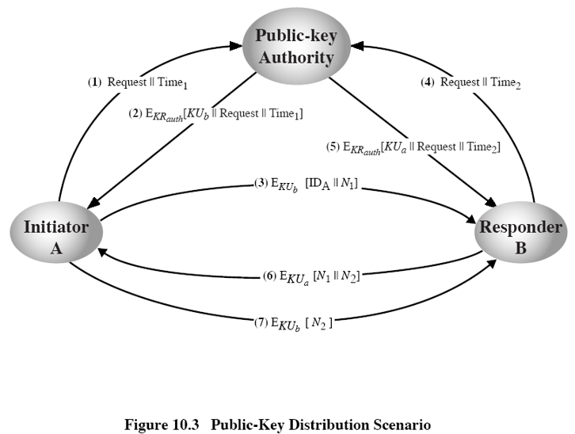

#第一章
#安全攻击分类
被动攻击：信息内容泄露、流量分析
主动攻击：伪装、重播、消息修改、拒绝服务
#安全服务
认证：保证通信的真实性。确保通信双方的身份是可信的。
访问控制：防止资源非授权使用
数据保密性：防止传输消息受到被动攻击。
数据完整性：与主动攻击有关，检测而不是阻止。
不可否认性：防止通信方对通信行为的否认，包括源不可否认性和宿不可否认性。
可用性：系统或系统资源能够按照要求根据系统性能规范被授权系统的实体访问和使用。
#第二章
#理论安全与实际安全
理论安全：攻击者无论截获多少密文，都无法得到足够的信息来唯一地决定明文。香农证明只有一次一密才能达到理论安全，不实用。
实际安全（计算安全）：在有限的资源内，攻击者都不能通过系统的分析方法来破解系统。
#密码体制
#对称密码体制与非对称密码体制
对称密码：加密密钥和解密密钥相同，或者一个密钥可以从另一个导出，能加密就能解密，加密能力和解密能力是结合在一起的，开放性差。
非对称密码：加密密钥和解密密钥不相同，从一个密钥导出另一个密钥是计算上不可行的，加密能力和解密能力是分开的，开放性好。
#序列密码体制和分组密码体制
序列密码：密文不仅与最初给定的算法和密钥有关，同时也与明文位置有关(是所处位置的函数)。
分组密码：经过加密所得到的密文仅与给定的密码算法和密钥有关，与被处理的明文数据在整个明文中的位置无关。
#确定型密码体制和概率型密码体制
确定型密码:当明文和密钥确定后，密文也就唯一地确定了。
概率密码：当明文和密钥确定后，密文通过客观随机因素从一个密文集合中产生，密文形式不确定。
#单向函数型密码体制和双向变换型密码体制
单向函数型密码体制：适用于不需要解密的场合，容易将明文加密成密文，如哈希函数。
双向变换型密码体制：可以进行可逆的加密、解密变换。
#现代密码学的基本原则
设计加密系统时，总是假定密码算法是可以公开的，需要保密的是密钥。一个密码系统的安全性不在算法的保密，而在于密钥，即 Kerckhoff 原则。
#对加密系统的要求
系统应该是实际安全的(practical secure)，截获密文或已知明文－密文对时，要决定密钥或任意明文在计算上是不可行的。
加密解密算法适用于密钥空间中的所有元素。
系统易于实现，使用方便。
系统的安全性不依赖于对加密体制或加密算法的保密，而依赖于密钥。
系统的使用不应使通信网络的效率过分降低。
#对加密信息的攻击类型
| 攻击类型 | 攻击者持有的信息 |
|---|---|
| 唯密文攻击 | 加密算法、待解密密文 |
| 已知明文攻击 | 加密算法 、待解密密文、与待解密密文（同一密钥加密）的明密文对 |
| 选择明文攻击 | 加密算法 、待解密密文、攻击者选择的明文及对应的（同一密钥加密）密文 |
| 选择密文攻击 | 加密算法 、待解密密文、攻击者选择的（同一密钥加密）密文及对应的明文 |
| 选择文本攻击 | 加密算法 、待解密密文、攻击者选择的（同一密钥加密）密文及对应的明文、攻击者选择的明文及对应的（同一密钥加密）密文 |
#代换与置换
代换法是将明文字母替换成其他字母、数字或符号的加密方法。如果把明文看成是二进制序列的话，代换就是用密文位串来代换明文位串。代换法改变明文内容的表示形式，保持内容元素之间相对位置不变。由于语言的冗余性（即字母单词使用频率的统计特性），单表代换虽然密钥空间很大，但并不安全。
置换法是改变明文内容元素的相对位置，保持内容的表现形式不变。通过重新安排消息字母的位置来隐藏明文信息，而不是用其他字母来代换明文字母。这种方法是很容易破译的，因为密文拥有与明文一样的字母频率统计特性。
#隐写术
隐写术不是加密技术。比如将信息通过改变像素内容隐藏到图片中，不可见的墨水等。
#一次一密
两个限制：产生大规模随机密钥有实际困难、密钥的分配和保护无法保证
#第三章
#流密码与分组密码
流密码：每次加密数据流的一位或一个字节。
分组密码：将一个明文分组作为一个整体进行加密，并且一般得到等长的密文。
#扩散和混淆
扩散：明文统计特征消散在密文中。可以通过让多个明文数字影响一个密文数字，或者每个明文数字可以影响多个密文数字。
混淆：使密文和加密密钥之间的统计关系尽量复杂。
Confusion means that each binary digit (bit) of the ciphertext should depend on several parts of the key, obscuring the connections between the two.
Diffusion means that if we change a single bit of the plaintext, then (statistically) half of the bits in the ciphertext should change, and similarly, if we change one bit of the ciphertext, then approximately one half of the plaintext bits should change. Since a bit can have only two states, when they are all re-evaluated and changed from one seemingly random position to another, half of the bits will have changed state.
In Shannon's original definitions, confusion refers to making the relationship between the ciphertext and the symmetric key as complex and involved as possible; diffusion refers to dissipating the statistical structure of plaintext over the bulk of ciphertext. This complexity is generally implemented through a well-defined and repeatable series of substitutions and permutations. Substitution refers to the replacement of certain components (usually bits) with other components, following certain rules. Permutation refers to manipulation of the order of bits according to some algorithm. To be effective, any non-uniformity of plaintext bits needs to be redistributed across much larger structures in the ciphertext, making that non-uniformity much harder to detect.
#第四章
#同余
给定整数 $a, b$ 及 $n≠0$, 当且仅当 $a-b=kn$ 时，$a$ 与 $b$ 在模 $n$ 时同余，记为 $a≡b\ mod\ n$ 或 $a≡nb$。
如果 $n|(a-b)$, 则 $a≡b\ mod\ n$。
#模运算
$$(a1\ op\ a2)\ mod\ n =[(a1\ mod\ n )]\ op\ (a2\ mod\ n)]\ mod\ n$$
#乘法逆元
如果一个整数与 $n$ 互素，那么它在 $Z_n$ 中存在一个乘法逆元。
对于任何一般的模数 $n$，如果 $a$ 与 $n$ 互素，那么用乘数 $a$ 作用到 $Z_n$ (即 $0,1,2,...,n-1$) 然后模 $n$ 会得到完整的 $Z_n$ (元素顺序可能不同，也可以叫做 $Z_n$ 的一个置换)。
| Z8 | 0 | 1 | 2 | 3 | 4 | 5 | 6 | 7 |
|---|---|---|---|---|---|---|---|---|
| 乘以 5 | 0 | 5 | 10 | 15 | 20 | 25 | 30 | 35 |
| 剩余类 | 0 | 5 | 2 | 7 | 4 | 1 | 6 | 3 |
#欧几里得算法与拓展欧几里得算法
#欧几里得算法
又称辗转相除法。欧几里德定理：$gcd(a, b) = gcd(b , a \% b)$
#拓展欧几里得算法
对于不完全为 $0$ 的非负整数 $a，b$，$gcd(a，b)$表示 $a，b$ 的最大公约数，必然存在整数对 $x，y$，使得 $gcd（a，b）=ax+by$。
#第五章
#双重 DES
因为对单重 DES 进行穷举攻击是可行的（密钥长度仅有 56 位）。
双重 DES 存在着中间相遇攻击。
$C = E_{K2}(E_{K1}(P))， P = D_{K1}(D_{K2}(C))$，因为$X = E_{K1}(P) = D_{K2}(C)$，用所有可能的密钥加密明文 $P$ 并把结果存储起来，然后用所有可能的密钥解密密文 $C$，寻找匹配的 $X$ 值，因此复杂度只有 $O(2^{56})$。攻击单重 DES 复杂度为 $O(2^{55})$。
#三重 DES
#使用两个密钥的三重 DES
$$C=E_{K1}[D_{K2}[E_{K1}[P]]$$
如果 $K1=K2$，那么就变成了单重 DES，从而实现对单重 DES 的兼容。
#使用三个密钥的三重 DES
$$C = E_{K3}[D_{K2}[E_{K1}[P]]]$$
如果 $K1=K2$ 或者是 $K2=K3$，那么就变成了单重 DES，从而实现对单重 DES 的兼容。
#分组密码的工作模式
分组密码的安全不仅和秘钥长度有关还和分组长度有关。
#电子密码本模式 ECB
明文分成 64 的分组进行加密，必要时填充，每个分组用同一密钥加密，相同明文分组加密得相同密文。
ECB 模式特别适合数据较少的情况，如安全传输 DES 密钥。
一段明文消息中若有几个相同的明文组，则密文也将出现几个相同的片段。
对于很长的消息，ECB 是不安全的，如果消息是非常结构化的，密码分析可能利用其结构特征来破解。
ECB 的弱点来源于其加密过的密文分组是互相独立的。
优点：操作简单，易于实现；分组独立，可以并行加密；传输错误不会传播。
缺点：掩盖不了明文结构信息，可以进行统计分析攻击。
#密文分组链接模式 CBC
加密输入是当前明文分组和前一密文分组的异或，形成一条链，使用相同的密钥， 这样每个明文分组的加密函数输入与明文分组之间不再有固定的关系。
每个密文分组依赖于所有明文分组。
发送方和接收方需要共享初始向量 Initial Value(IV)。如果 IV 被明文传送，则攻击者可以预先改变 IV 中的某些位，则接收者收到的 P1 也就相应改变了。因此，IV 必须是一个固定的值或者使用伪随机数、计数器 IV 用ECB 方式在消息之前加密传送。
在消息的最后，还要处理不够长度的分组进行填充。
明文消息中的任何一点变化都会影响所有的密文分组。
优点：能掩盖明文结构信息，保证相同密文可得不同明文，安全性好于 ECB；适合传输长度较长的报文。
缺点：不可并行；传递错误，即一个分组错误导致后续分组均错误；初始向量 IV 的选取比较复杂。
#密文反馈模式 CFB
可以视为流密码，不再要求报文被填充成整个分组，可以实时运行，如果要传输一个字符流，每个字符都可以使用面向字符的流密码加密后立即传输。
加密：加密函数的输入是一个 64 位的移位寄存器，产生初始向量 IV。加密函数高端 s 位与明文 P1 的第一单元异或，产生 s 位密文 C1 进入移位寄存器低端，继续加密，与 P2 输入异或，如此重复直到所有明文单元都完成加密。
解密：采用相同方案，但是使用加密函数而非解密函数。
设 $MSB_s(X)$ 表示 X 的最左边 s 位。则
$$C1=P1 \bigoplus MSB_s[E(K,IV)]$$
从而有 $P1=C1 \bigoplus MSB_s[E(K,IV)]$
如果在传输过程中某一个分组的密文发生改变，则会影响到这个分组及其后的分组的明文正确性。
优点：可以实时运行，及时加密小于分组大小的数据；隐藏了明文结构。
缺点：不可并行；传输错误会扩散。
#输出反馈模式 OFB
结构上类似 CFB，但是 OFB 中加密函数输出被反馈回移位寄存器，CFB 中是密文单元被反馈回移位寄存器（对比两个图，可以看到反馈位置是不同的）。优点是传输中的比特差错不会传播，缺点是比 CFB 更容易受报文流篡改攻击。OFB 的 IV 必须是时变值。
OFB 的一个优点是，传输过程中在某位上发生的错误不会影响到其他位。比如，C1 中有 1 位发生了错误，只会影响到 P1 的恢复，后续的明文单元不受影响。
OFB 的缺点是，抗消息流篡改攻击的能力不如 CFB。即密文中的某位取反，恢复出的明文相应位也取反。
优点：可以实时运行，及时加密小于分组大小的数据；隐藏了明文结构；传输过程中在某位上发生的错误不会影响到其他位。
缺点：不可以并行；比 CFB 更容易受报文流篡改攻击。
#计数器模式 CTR
与 OFB 很像，但是加密的是计数器的值而不是任何反馈回来的值。每一个明文分组都必须使用一个不同的密钥和计数器值，决不要重复使用。
-
高效、可以做并行加密
-
对高速链路的突发数据加密尤其有效
-
可以对被加密的分组进行随机存取
-
安全、简洁
-
不需要填充
#第八章
#费马定理
若 $p$ 是素数, $a$ 是正整数且不能被 $p$ 整除, 则 $a^{p-1}\ mod\ p=1$
证明：
对于 $X=\lbrace a\ mod\ p,2a\ mod\ p,…, (p-1)a\ mod\ p\rbrace$
$\because a$ 是正整数且不能被 $p$ 整除
$\therefore X$ 内的元素均大于零
假设 $ja≡ka(modp)$，其中 $1\leqslant j<k\leqslant p-1$
$\because a$ 与 $p$ 互素
$\therefore$ 两边可以把 $a$ 消去，则推出 $j ≡ k(mod p)$，与假设矛盾
也就是说，$X$ 内的元素均为正整数且互不相等
$\because \lbrace a\ mod\ p, 2a\ mod\ p, ..., (p-1)a\ mod\ p\rbrace$ 是 $\lbrace 1, 2, ..., (p-1)\rbrace$ 的置换形
$\therefore (a \times 2a \times ... \times (p-1)a) ≡ (1 \times 2 \times ... \times (p-1))\ (mod\ p)≡ (p-1)!\ (mod\ p)$
$\because a \times 2a \times ... \times (p-1)a = (p-1)!a^{p-1}$，即 $(p-1)!a^{p-1} ≡ (p-1)!\ (mod\ p)$
两边去掉 $(p-1)!$，即得 $a^{p-1}\mod\ p = 1$
#欧拉函数
$\varphi (n)$ 是比 $n$ 小且与 $n$ 互素的正整数的个数，定义 $\varphi (1)=1$。
#欧拉函数定理
$p$ 和 $q$ 是素数, $n=p\times q, \varphi (n)= \varphi (p)\varphi (q)=(p-1)(q-1)$
证明：
考虑余数集合 $\lbrace 0, 1, …, (pq-1)\rbrace$ 中不与 $n$ 互素的余数集合是 $\lbrace p, 2p, …, (q-1)p\rbrace , \lbrace q, 2q, …, (p-1)q\rbrace$，
所以 $\varphi (n)= (pq-1)-[(q-1)+(p-1)]=pq-(p+q)+1= (p-1)(q-1)=\varphi (p)\varphi (q)$
#欧拉定理
对任意互素的 $a$ 与 $n$，$a^{\varphi (n)} \equiv 1\ (mod\ n)$
证明：
若 $n$ 为素数，则根据 $\varphi (n)=n-1$ 和 $a^{p-1}\ mod\ p=1$ 可知成立。但这是不完全的证明。
考虑集合 $R= \lbrace x_1,x_2,...,x_{\varphi (n)} \rbrace$,每一个元素都有 $gcd(x_i,n)=1$。
令 $S=\lbrace (ax_1\ mod\ n),(ax_2\ mod\ n),...,(ax_{\varphi (n)}\ mod\ n)\rbrace$
$S$ 是 $R$ 的一个置换，因为
(1) $a$ 与 $n$ 互素，且 $x_i$ 与 $n$ 互素，所以 $ax_i$ 必与 $n$ 互素，这样 $S$ 中所有元素均小于 $n$ 且与 $n$ 互素。
(2) $S$ 中没有重复元素，因为如果 $ax_i\equiv ax_j(modn)$，则 $x_i=x_j$，显然不成立。
$\prod_{i=1}^{\varphi (n)}(ax_imodn)=\prod_{i=1}^{\varphi (n)}x_i$
$\prod_{i=1}^{\varphi (n)}ax_i\equiv \prod_{i=1}^{\varphi (n)}x_i(modn)$
$a^{\varphi (n)}\times [\prod_{i=1}^{\varphi (n)}x_i]\equiv \prod_{i=1}^{\varphi (n)}x_i(modn)$
两边同时消去，得到 $a^{\varphi (n)} \equiv 1(modn)$
#中国剩余定理
中国余数定理 CRT 说明某一范围内的整数可通过它对两两互素的整数取模所得的余数来重构。
例如：$Z_{10}(0,1,…,9)$ 中的 10 个整数可通过它们对 2 和 5 (10 的素因子)取模所得的两个余数来重构. 假设数 $x$ 的余数 $r_2=0$ 且 $r_5=3$, 即 $x\ mod\ 2=0$, $x\ mod\ 5=3$, 则 $x$ 是 $Z_{10}$ 中的偶数且被 5 除余 3, 唯一解 $x=8$。
#一种 CRT 的表示形式
令 $M=\prod_{i=1}^{k}m_i$, 其中 $m_i$ 两两互素, $1\leqslant i, j\leqslant k, i≠j, gcd(m_i, m_j)=1$。将 $Z_M$ 中的任一整数对应一个 $k $元组，该 $k$ 元组的元素均在 $Z_{m_i}$ 中, 对应关系为 $A\leftrightarrow (a_1,a_2,…,a_k)$, 其中 $A∈Z_M$, 对 $1\leqslant i\leqslant k, a_i∈Z_{m_i}$，且 $a_i = A\ mod\ m_i$。
#计算例子
今有物不知其数, 三三数之剩二, 五五数之剩三, 七七数之剩二, 问物几何。
(1) 计算 $n=3\times 5\times 7$，记 $d_1=3,d_2=5,d_3=7$; $r_1=2,r_2=3,r_3=2$
(2) 根据 $(\frac{n}{d_i})y_i\ mod\ d_i=1$，计算 $y_i$
$(\frac{105}{3})y_i\ mod\ 3=1 $，得 $y_1=2$
$(\frac{105}{5})y_i\ mod\ 5=1 $，得 $y_2=1$
$(\frac{105}{7})y_i\ mod\ 7=1 $，得 $y_3=1$
(3) $x=[\prod (\frac{n}{d_i})y_ir_i]\ mod\ n$
$x=(35\times 2\times 2+21\times 1\times 3+15\times 1\times 2)\ mod\ 105=23$
#第九章
#对称密码与非对称密码
#对称密码体制的问题
加密能力与解密能力是捆绑在一起的。
密钥更换、传递和交换需要可靠信道，密钥分发困难。
如有 N 用户，则需要 $C=\frac {N\times (N-1)}{2}$ 个密钥，n=1000 时，C(1000, 2) ≈ 500000, 密钥管理困难。
无法满足不相识的人之间通信的保密要求。
不能实现数字签名。
#非对称密码体制的基本特点
加密能力与解密能力是分开的。
密钥分发简单。
需要保存的密钥量大大减少，N 个用户只需要 N 个密钥。
可满足不相识的人之间保密通信。
可以实现数字签名。
#公钥密码体制的应用
加密/解密：发送方用接收方的公钥对消息加密。
数字签名：发送方用其私钥对消息签名，可以对整体消息签名或对消息的摘要签名。
密钥交换：通信双方交换会话密钥。
#RSA
#算法流程
随机选择两个秘密大素数 $p$ 和 $q$
计算公开模数 $n = p\times q$
计算秘密的欧拉指数函数 $\varphi (n) = (p-1)(q-1)$
选择一个与 $\varphi (n)$ 互素的数，作为 $e$ 或 $d$
用 Euclid 算法计算模 $\varphi (n)$ 的乘法逆元素，即根据 $ed\ mod\ φ(n)=1$, 求 $d$ 或 $e$
加密：$C=M^e\ mod\ n$
解密：$M=C^d\ mod\ n = (M^e\ mod\ n)^d\ mod\ n=M^{ed}\ mod\ n=M$
公钥：$PU=\lbrace e,n\rbrace$ 私钥：$PR=\lbrace d,n\rbrace$
#需要满足的条件
有可能找到 e, d, n 的值, 使得对所有 $M<n$ 有 $M^{ed}\ mod\ n = M$。
对于所有 $M<n$ 的值, 要计算 $M^e$ 和 $C^d$ 是相对容易的。
在给定 e 和 n 时, 计算 d 是不可行的。
#证明
已知：$ed\ mod\ \varphi (n)=1$，$M<n$，$p$ 和 $q$ 是素数
求证：$M^{ed}\ mod\ n=M$
#可能的攻击方式
穷举攻击：尝试所有可能的密钥
数学攻击：对两个素数乘积的因子分解(FAC 问题)
计时攻击：依赖于解密算法的运行时间
RSA 的安全性问题依赖于大合数的素因子分解。
#第十章
#几种公钥分配方法
公开发布、公开可访问的目录、公钥授权、公钥证书
#公开发布
#公开可访问的目录
一个可信实体或组织负责这个公开目录的维护和分配。
- 目录包含 {name, public-key} 等项。
- 每一通信方通过目录管理员以安全的方式注册一个公钥。
- 通信方在任何时刻可以用新的密钥替代当前的密钥。
目录定期更新。
目录可通过电子方式访问。
安全问题：一旦攻击者获得目录管理员私钥，则可传递伪造的公钥，可以假冒任何通信方以窃取消息，或者修改已有的记录。
#公钥授权

(1) A 发送带有时间戳的消息给公钥管理员, 请求 B 的当前公钥。
(2) 管理员给 A 发送用其私钥 $KR_{auth}$ 加密的消息, A 用管理员的公钥解密，可以确信该消息来自管理员。
B 的公钥 $KU_b$，用来加密；
原始请求 $Request$，A 可以验证其请求未被修改；
原始时间戳 $Time_1$, A 可以确定收到的不是来自管理员的旧消息。
(3) A 保存 B 的公钥, 并用它对包含 A 的标识 $ID_A$ 和 $N_1$ 的消息加密, 然后发送给 B。
(4、5) B 以同样方式从管理员处得到 A 的公钥。
(6) B 用 $KUa$ 对 A 的 $N_1$ 和B的 $N_2$ 加密, 发送给 A。
(7) A 用 B 的公钥对 $N_2$ 加密并发送给 B, 使 B 相信其通信伙伴是 A。
#公钥证书
有了公钥证书使得不通过实时访问公钥授权部门而实现公钥交换成为可能。
公钥证书将一个通信方的身份与他的公开密钥绑定在一起，通常还包括有效期和使用方法等。
证书的所有内容必须经由可信公钥授权方或者证书授权方签名后方可生效。
知道公钥授权当局公开密钥的任何人都可以验证一个用户的公开密钥证书的有效性。
对于申请者 A，管理员提供的证书为：
$$C_A = E_{KR_{auth}} [Time_1, ID_A, KU_a]$$
其他人读取并验证：
$$D_{KU_{auth}}[C_A]=D_{KU_{auth}} [E_{KR_{auth}} [Time_1, ID_A, KU_a]]=(Time_1, ID_A, KU_a)$$
#公钥密码分配传统密码体制密码
公钥密码算法速度较慢，因此更适合作为传统密码中实现秘密密钥分配的一种手段。
下图是一个利用公钥密码体制分配（传输）对称式密码（会话密钥 $K_s$）的例子：
(1) A 用 $KU_b$ 加密消息 $N_1$ 和 $ID_A$ 发送给 B。
(2) 只有 B 拥有B的私钥，即 $N_1$ 只有 B 可见，B 产生随机值 $N_2$，和 $N_1$ 一起加密后发送给 A，A 看到 $N_1$ 后即可确定消息是 B 发来的。
(3) 同理，$N_2$ 只有 A 可见，B 可以确定消息是 A 发来的。
(4) A 产生本次会话的密钥，先用自己的私钥加密再用 B 的公钥加密发送给 B。
上述过程中存在的安全问题：消息(4)可以进行重放攻击。在下次会话时上次的会话密钥可能已经泄露，攻击者可以重放上次的消息(4)进行攻击。解决方案是将消息(3)和消息(4)合并发送，即(3)$E_{KU_b}[N_2 || E_{KR_a}[K_s]]$。
#Diffie-Hellman 密钥交换
Diffie-Hellman 密钥交换算法是一种公钥分发机制。它不是用来加密消息的，所生成的是通信双方共享的会话密钥，必须保密，其值取决于通信双方的私钥和公钥信息。
#流程
通信双方约定一个大素数(或多项式) p, 和模 p 的一个素根 $\alpha$（p 与 $\alpha$ 是公开的）
双方分别选择一个秘密钥(整数值)，如 $x_A < p， x_B < p$
计算公钥, 如 $y_A = \alpha ^{x_A}\ mod\ p, y_B = \alpha ^{x_B}\ mod\ p$, 并相互交换
双方共享的会话密钥 $K_{AB}$ 可以如下算出
$K_{AB} = \alpha ^{x_Ax_B}\ mod\ p= y_A^{x_B}\ mod\ p (which\ B\ can\ compute) = y_B^{x_A}\ mod\ p (which\ A\ can\ compute)$
$K_{AB}$ 是双方用对称密码通信时共享的密钥
如果双方继续通信，可以继续使用这个密钥，除非他们要选择新的密钥
#安全性
攻击者如果想要获得 x, 则必须解决 DLP(离散对数)问题。$X_B=dlog_{\alpha,p}Y_B$，即求 $Y_B$ 的以 $\alpha$ 为底的模 $p$ 的离散对数。
#中间人攻击
#ELGamal 概率密码系统
#流程
假设 A 和 B 互相通信，共享大素数 $p$，本原元素 $\alpha，1≤m≤p-1$
加密：
A 选择 $k∈[1, p-1]$, $k$ 的作用其实即为 $x_A$, A 访问公共区域找到 B 的公开密钥 $Y_B = α^{x_B}\ mod\ p$, 计算：$K = (Y_B)^k\ mod\ p, 即K = α^{x_Bk}\ mod\ p$
$c1 = α^k\ mod\ p$
$c2 = mK\ mod\ p$
密文即为 $(c1, c2)$
解密：
B 首先恢复 K：K $= c1^{x_B}\ mod\ p = α^{kx_B}\ mod\ p$
然后恢复 m：m $=c2K^{-1}\ mod\ p$。这里的 $K^{-1}$ 指 $KK^{-1}\ mod\ p=1$
#效率及安全性
ElGamal 密码体制加密效率是 50%，因为密文大小是明文的两倍。
ElGamal 密码体制是概率密码体制，同样的明文每次加密得到不同的密文, 因为每次随机选择 k。
ElGamal 密码体制的破译难度同 Diffie-Hellman 的方法，即基于 DLP，离散对数问题，最快的算法需要 T=exp((ln(p)lnln(p)1/2) 次运算。
#第十一章
#消息认证
消息认证就是验证接受的消息确实来自真正的发送方，且是未经修改过的消息，并且可以认证消息的顺序和及时性。
#消息认证函数
#消息加密
消息加密本身提供了一种认证手段。
对称加密

-
保密性：如果除了源和宿没有其他人知道密码，那么就保证了保密性。
-
认证：宿可以确信消息是由源产生的，因为除了宿以外只有源拥有加密密钥，产生出用此密钥可以解密的密文。因此宿如果可以恢复出明文，则可以认为每一位都没有被修改过，建立在明文具有可读性的基础上。
如果消息可以是任意的位模式，接收方无法确定收到的消息是合法明文的密文（不具有可读性）。因此要求明文具有某种易于识别的结构，如在加密前对每个消息附加一个帧校验序列 FCS。
FCS 和加密函数E执行的顺序很重要。图中(a)为内部错误控制，攻击者很难产生密文使得控制码仍为正确，所以可以提供认证。图中(b)为外部错误控制，攻击者可以构造出具有正确控制码的消息，虽然不知道解密后的消息是什么，但是可以混淆破坏通信。
公钥加密
(b) 保密性：只有接受方具有私钥可以解密消息，因此具有保密性；但公钥是公开的，任何人都可以假冒发送方给接收方发送消息，不能保证消息的真实性，因此没有认证。
(c) 认证和签名：接收方接收到密文并可以解密出明文（如果明文是具有某种结构的，即具有可读性以区分真实的明文和随机串）就可以确定发送方是真实的。只有发送方有自己的私钥，加密后就相当于是一个签名。
(d) 保密性、认证和签名：发送方先用自己的私钥加密以作为签名，再用接收方的公钥加密实现保密性，同时明文具有某种结构的情况下实现了认证。缺点是一次通信执行四次公钥算法（两次加密两次解密）。
#消息认证码 MAC
利用密钥产生一个固定长度的短数据块。假如通信双方共享密钥 K，则 MAC=C(K,M)。如果接收方通过密钥和消息计算的 MAC 与收到的一致，那么可以确信(1)消息未被修改过(2)消息来自真正的发送方(3)如果消息中含有序列号，那么可以确定消息顺序是正确的。
因为 MAC 是定长的，而消息数远大于 MAC 的取值范围，因此 MAC 是一个多对一的函数。
因为 K 是通信双方所共有的，所以 MAC 不是数字签名。同时 MAC 不需要解密，因此不需要具有可逆性，使得 MAC 比加密更加难以破解。
(a) 消息认证：整个消息以明文发送，没有保密性，但有消息认证。
(b) 与明文捆绑的消息认证和保密性：对明文做 MAC 然后与明文一起加密。
(c) 与密文捆绑的消息认证和保密性：对明文加密，然后对密文做 MAC，与密文一起发送。
MAC 函数应具有满足以下需求：
- 若攻击者已知 $M$ 和 $C(K,M)$，则构造满足 $C(K,M')=C(K,M)$ 的消息 $M'$ 在计算上是不可行的
- $C(K,M)$ 应该是均匀分布的，即对任何随机选择的消息 $M$ 和 $M'$，$C(K,M')=C(K,M)$的概率是 $2^{-n}$，其中 n 是 MAC 的位数
- 设 M' 是 M 的某个已知的变换，即 M'=f(M)，如 f 可能表示逆转 M 的一位或多位，那么 $C(K,M)=C(K,M')$ 的概率是 $2^{-n}$
#散列函数 HASH
一个散列函数以变长的报文 M 作为输入，产生定长的散列码 H(M) 作为输出，亦称作报文摘要。 散列码是报文所有比特的函数值，具有差错检测能力，报文任意一比特的改变都将引起散列码的改变。
Hash 函数的安全性需求
| 需求 | 描述 |
|---|---|
| 输入长度可变 | H可以应用于任意大小的数据块 |
| 输出长度固定 | H产生固定长度的输出 |
| 效率 | 对任意给定的明文x，计算H(x)容易，可由硬件或软件实现 |
| 抗原像攻击（单向性） | 对任意给定的散列码h，找到满足H(x)=h的x，在计算上不可行 |
| 抗第二原像攻击（抗弱碰撞性） | 对任何给定的分组x，找到满足y≠x且H(x)=H(y)的y，在计算上不可行 |
| 抗强碰撞性 | 找到任何满足H(x)=H(y)的偶对(x, y)，在计算上不可行 |
| 伪随机性 | H的输出满足伪随机性测试标准 |
满足前五条的称为弱哈希函数，如果第六条也满足则称为强哈希函数。
应用在数字签名上的Hash函数必须是强哈希函数。
三个安全特性之间的关系
抗强碰撞那么一定抗弱碰撞，反之不成立。
抗强碰撞不一定抗原像，反之亦然。
抗弱碰撞不一定抗原像，反之亦然。
抗强碰撞可以看作是在人群中寻找两个名字相同的人，抗弱碰撞性可以看作是给定一个名字，然后在人群中找一个和这个名字相同的人。
#Hash 函数提供的消息认证方式

(a) 使用对称密码加密消息和 Hash 码。对称式密钥保证了保密性，并且可以确定发送方的真实性；Hash 码提供了消息认证的功能。
(b) 使用对称式密码仅加密 Hash 码。对于无需保密性的应用，减少了加解密的负担。实现了消息认证。
(c) 不使用加密算法，双方共享秘密值 s，并且 s 不在信道上传输，仅实现了消息认证。
(d) 在(c)的基础上提供保密性。
#Hash 函数提供的数字签名方式
(a) 使用发送方的私钥，仅对 Hash 码进行加密。实现了消息认证和数字签名。
(b) 在(a)的基础上使用对称式密码加密，同时实现保密性。
#第十三章
#数字签名概述
#数字签名实现方法
数字签名是一种认证机制，它使得消息的产生者可以添加一个起签名作用的码字。通过计算消息的散列值并用产生者的私钥加密散列值来生成签名。签名保证了消息的来源和完整性。
数字签名标准(DSS)是 NIST 标准，它使用安全散列算法(SHA)。
#数字签名的要求
在收发双方不能完全信任的情况下，需要除认证之外的其他方法来解决假冒和否认的问题，数字签名则是解决办法；
签名接收者能容易地验证签字者对消息所做的数字签名，包括日期和时间；
任何人，包括签名接收者，都不能伪造签名者的签字；
发生争议时，可由第三方解决。
#数字签名与消息认证的区别
消息认证使收方能验证消息发送者及所发消息内容是否被窜改过。当收发者之间没有利害冲突时，这对于防止第三者的破坏来说是足够了。但当收者和发者之间有利害冲突时，就无法解决他们之间的纠纷，此时须借助满足前述要求的数字签名技术。
#直接数字签名
用共享的密钥（对称密钥）对明文及签名一起加密。注意先进行签名，然后执行外层的加密，这样在发生争执时，第三方可以查看消息及其签名。若先加密再签名，则第三方必须知道解密密钥才能查看消息。先签名再加密，接收方可以保留消息及其签名留作争执时使用。
直接数字签名的有效性依赖于发送方私钥的安全性。发送方如果想要否认一条消息，他可以声称自己的私钥丢失或被盗用。可以使用加入时间戳的方式减少这种威胁。另一种威胁是，攻击者在T时刻盗用了发送方的私钥，并发送了一条签名的消息加盖T时刻之前的时间戳。解决上述问题的方法是使用数字证书的证书管理中心。
#ELGamal 数字签名方案
首先，基本元素是素数 p 和原根 $\alpha$
A 用户生成随机整数 $X_A\in (1,p-1)$，计算$Y_A= \alpha ^{X_A}\ mod\ p$
计算消息的 Hash 码，m=H(M)
产生签名
选择整数 $K\in [1,p-1]$，并且 K 与 p-1 互素
计算 $S_1 = \alpha ^K\ mod\ p$
计算 K 模 p-1 的逆，即 $K^{-1}\ mod\ (p-1)$
计算 $S_2=K^{-1}(m-X_AS_1)\ mod\ (p-1)$
签名即为 $(S_1,S_2)$
验证签名
计算 $V_1=\alpha ^m\ mod\ p$
计算 $V_2=(Y_A)^{S_1}(S_1)^{S_2}\ mod\ p$
如果 $V_1=V_2$，那么签名合法。